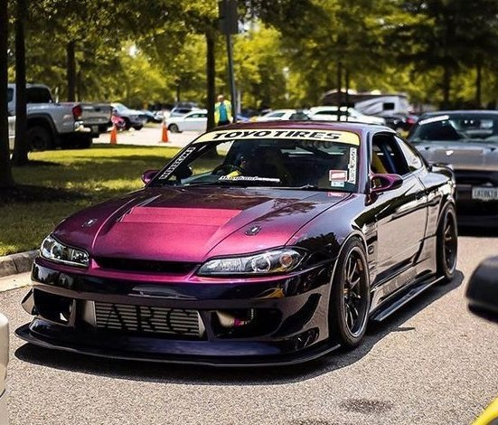

nissan silvia s14
es un automóvil deportivo producido por el fabricante japonés Nissan, primero entre los años 1964 y 1968 y luego entre 1974 y 2002. Tiene motor delantero, tracción trasera y existió con carrocerías cupé, hatchback y descapotable. El Silvia es muy utilizado en drifting y fue utilizado en el Campeonato Japonés de Gran Turismo y en el Campeonato Mundial de Rally.
Los principales competidores que hacían frente al Nissan Silvia eran el Honda Prelude, Mazda MX-6, Toyota Celica, Mitsubishi Eclipse, Isuzu Impulse, Subaru Impreza y Honda Integra.
Aunque los modelos recientes han compartido este chasis con otros vehículos producidos por Nissan (especialmente el 200SX europea y norteamericana 240SX en los S13 y S14 generaciones y 180SX en el mercado japonés), el nombre de Silvia no es intercambiable con los códigos del chasis.
carro stock

carro modificado

volver